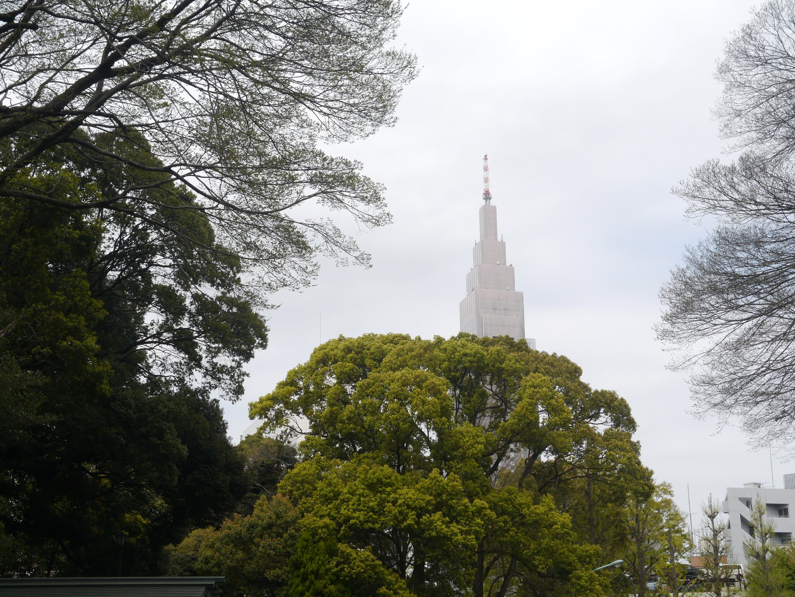

Incidents / Data breach ·
Was the Docomo customer data leak a hack?
Also reported as the Docomo data leak and the My docomo hack.


Is it a hack? The short answer
Says it was hackedYes. Docomo says outside parties got into My docomo and its online shop, and that customer information leaked. Jiji Press and Nippon TV report the same. The cause and the attacker are not established.
How well supported Confirmed
Rests on Outside parties got into My docomo and the Docomo online shop · Customer information leaked, for up to about 300,000 lines
This is the current answer, not a final verdict. A final verdict is published only after the site's owner has reviewed the evidence.
How much do you want to read?
The latest ·
A second outlet backs the overseas-IP alert account, and card data not leaking; both now Confirmed.
Is it back?
Partly back at our last check. As of Nov 22, My docomo is partly back, the online shop is still down. evidence
How big is it?
Large. Up to about 300,000 phone lines, per Docomo; two outlets report the briefing figure of 294,839 (204,157 personal).
Who is affected?
Docomo customers, personal and corporate, whose data was held by My docomo and the online shop, including some who had already cancelled.
Known so far
- Docomo says outside parties got into My docomo and the online shop. evidence
- Customer information leaked, for up to about 300,000 lines. evidence
- Names, birth dates, contact details, ID-document numbers and contract details leaked; for some, bank details. evidence
- My docomo is partly back as of Nov 22; the online shop and the iOS app are still in emergency maintenance. evidence
Not known yet
- Who the attacker was.
- The full root cause.
- Whether the leaked data has been misused or sold.
- How much compensation will be paid, and to whom.
- When the online shop and iOS app return.
The full story
- 300,000Lines affected, at mostDocomo: up to about 300,000
- 294,839Exact count, press briefing204,157 of them personal
- 1:05 AMServices shut downThu Nov 5, Japan time
Was it a hack? What has been said
1
ConfirmedOutside parties got into My docomo and the Docomo online shopDocomo says it confirmed unauthorized access from outside to its online shop and My docomo on Nov 4, and gives the cause as unauthorized access from outside.
Why it supports Docomo's notice is a Tier 1 statement, and two independent outlets report it.
This is the company's own notice. Jiji Press and Nippon TV, which are independent of each other and of Docomo, report the same.
How did they get in?
2
ConfirmedThe attacker exploited how linked systems work together to pull data automaticallyITmedia Mobile, CNET Japan and Cybersecurity.com, all reporting on Docomo's Nov 6 press briefing, say the attacker abused the way several of Docomo's systems are linked together to search for and collect customer data automatically.
Why it supports Three independent outlets give the same account from the company's briefing. The d-account detail rests on one outlet.
Cybersecurity.com adds that the attack started from the d account system and that two-step login and passkeys worked as designed; only that outlet reports those details. Docomo's written notices say only 'unauthorized access from outside'. A full root-cause report has not been published, so the exact way in is still open.
Not establishedWho is behind the attackCybersecurity.com says the source of the attack has not been identified. No claim of responsibility and no named attacker turned up in the sources we read.
Why it supports Nothing public names the attacker.
This page does not name or guess at an attacker.
Questions people are asking
5
ConfirmedWas the Docomo customer data leak a hack?Yes. Docomo says outside parties got into My docomo and its online shop, and that customer information leaked. Jiji Press and Nippon TV report the same. The cause and the attacker are not established.
ConfirmedWhat data leaked?Names, birth dates, contact details, ID-document numbers and contract details for all affected customers, and bank account details for some. Docomo says My Number card information did not leak.
OpenHow did the attacker get in?Not answered yet.
What would settle it Docomo publishing a full cause report that names the intrusion route. Two outlets report that linked systems were abused to pull data automatically, but how the attacker got in has not been published.
Rests on The attacker exploited how linked systems work together to pull data automatically
OpenWho is behind the attack?Not answered yet.
What would settle it Docomo, police or a credible researcher naming the party, or a verified claim of responsibility.
Rests on Who is behind the attack
ReportedIs the Nov 5 network outage part of this?Docomo says no. It reports congestion at 5G SA switches and no sign of unauthorized access or a cyberattack in that outage.
What happened?
3
ConfirmedDocomo shut both services down early on Nov 5Docomo says it stopped procedures on the online shop and My docomo at about 1:05 AM Japan time on Thursday Nov 5, after seeing the access on Nov 4.
Why it supports The company's notice gives the time, and Nippon TV matches it.
Nippon TV reports the same start of emergency maintenance, at around 1 a.m. on Nov 5.
ConfirmedAs of Nov 22, My docomo is partly back, the online shop is still downDocomo's 6th notice: My docomo mostly works again (since Nov 9), but the online shop and some procedures stay in emergency maintenance.
Why it supports The company's own notice states the current status. Nikkei independently reported the Nov 9 partial restart of My docomo with the shop still closed.
From about 5:10 PM Japan time on Nov 22, data usage, charges, d points and mail settings are viewable again. The My docomo iOS app has been in emergency maintenance since about 5:30 PM on Nov 18; Docomo says to use a web browser meanwhile. No restart date for the shop is given.
ConfirmedA mass-access alert flagged the attack, which came from overseas IP addressesITmedia Mobile and CNET Japan, on Docomo's Nov 6 briefing: an alert for a large volume of access flagged the case at about 10:30 AM Nov 4 (Japan time). The attack came from overseas IP addresses, so Docomo first blocked access from abroad.
Why it supports Two independent outlets relay the same account from the company's briefing.
CNET Japan puts that block at about 2:30 PM. When that did not work, Docomo stopped My docomo and blocked specific attack routes, then briefly restarted the service. Hours later its systems flagged possible unauthorized access again, and it stopped My docomo and the online shop. Overseas IP addresses do not show where the attacker is.
Timeline of the Docomo data breach
8
Nov 4 Docomo confirms unauthorized access from outside to its online shop and My docomoConfirmed
Docomo says it confirmed unauthorized access from outside to its online shop and My docomo on Nov 4, and gives the cause as unauthorized access from outside.
Why it supports Docomo's notice is a Tier 1 statement, and two independent outlets report it.
This is the company's own notice. Jiji Press and Nippon TV, which are independent of each other and of Docomo, report the same.
Nov 4 A mass-access alert flags the attack on My docomoConfirmed
ITmedia Mobile and CNET Japan, on Docomo's Nov 6 briefing: an alert for a large volume of access flagged the case at about 10:30 AM Nov 4 (Japan time). The attack came from overseas IP addresses, so Docomo first blocked access from abroad.
Why it supports Two independent outlets relay the same account from the company's briefing.
CNET Japan puts that block at about 2:30 PM. When that did not work, Docomo stopped My docomo and blocked specific attack routes, then briefly restarted the service. Hours later its systems flagged possible unauthorized access again, and it stopped My docomo and the online shop. Overseas IP addresses do not show where the attacker is.
Nov 5 Docomo stops procedures on the online shop and My docomoConfirmed
Docomo says it stopped procedures on the online shop and My docomo at about 1:05 AM Japan time on Thursday Nov 5, after seeing the access on Nov 4.
Why it supports The company's notice gives the time, and Nippon TV matches it.
Nippon TV reports the same start of emergency maintenance, at around 1 a.m. on Nov 5.
Nov 5 to 1:20 AMSeparate nationwide 5G SA service disruption; Docomo finds no sign of a cyberattackReported
Nippon TV reports a nationwide 5G SA disruption from about 11 a.m. on Nov 5 was caused by switch congestion, and Docomo found no sign of a cyberattack. Service returned at 1:20 a.m. on Nov 6.
Why it supports One outlet, relaying the company's statement.
We keep this separate from the customer-data breach. The reported cause is the company's early finding.
Nov 6 Press reports say up to about 300,000 customer records leaked and that bank details were among the dataConfirmed
Docomo says its investigation confirmed that some customer information leaked through the unauthorized access, up to about 300,000 cases.
Why it supports Docomo's own notice, with two independent outlets matching the size.
Jiji Press and Nippon TV both report up to around 300,000. Docomo says no new leak has been confirmed since the services were shut down.
Nov 9 My docomo procedures begin to resume graduallyConfirmed
Docomo's 6th notice: My docomo mostly works again (since Nov 9), but the online shop and some procedures stay in emergency maintenance.
Why it supports The company's own notice states the current status. Nikkei independently reported the Nov 9 partial restart of My docomo with the shop still closed.
From about 5:10 PM Japan time on Nov 22, data usage, charges, d points and mail settings are viewable again. The My docomo iOS app has been in emergency maintenance since about 5:30 PM on Nov 18; Docomo says to use a web browser meanwhile. No restart date for the shop is given.
Nov 18 Emergency maintenance begins on the My docomo iOS appConfirmed
Docomo's 6th notice: My docomo mostly works again (since Nov 9), but the online shop and some procedures stay in emergency maintenance.
Why it supports The company's own notice states the current status. Nikkei independently reported the Nov 9 partial restart of My docomo with the shop still closed.
From about 5:10 PM Japan time on Nov 22, data usage, charges, d points and mail settings are viewable again. The My docomo iOS app has been in emergency maintenance since about 5:30 PM on Nov 18; Docomo says to use a web browser meanwhile. No restart date for the shop is given.
Nov 22 Docomo's 6th notice: usage, charges, d points and mail settings available again in My docomoConfirmed
Docomo's 6th notice: My docomo mostly works again (since Nov 9), but the online shop and some procedures stay in emergency maintenance.
Why it supports The company's own notice states the current status. Nikkei independently reported the Nov 9 partial restart of My docomo with the shop still closed.
From about 5:10 PM Japan time on Nov 22, data usage, charges, d points and mail settings are viewable again. The My docomo iOS app has been in emergency maintenance since about 5:30 PM on Nov 18; Docomo says to use a web browser meanwhile. No restart date for the shop is given.
What data was involved?
6
ConfirmedCustomer information leaked, for up to about 300,000 linesDocomo says its investigation confirmed that some customer information leaked through the unauthorized access, up to about 300,000 cases.
Why it supports Docomo's own notice, with two independent outlets matching the size.
Jiji Press and Nippon TV both report up to around 300,000. Docomo says no new leak has been confirmed since the services were shut down.
ConfirmedThe exact count given at the press briefing: 294,839 linesITmedia Mobile, CNET Japan and Cybersecurity.com, all reporting on Docomo's Nov 6 press briefing, say up to 294,839 lines were affected, including customers who had already cancelled; 204,157 of them are personal contracts.
Why it supports Three independent outlets report the same figure from the company's briefing.
CNET Japan and Cybersecurity.com put the corporate share at 90,682, which matches the difference. Docomo's written notices give only 'up to about 300,000'.
ConfirmedNames, birth dates, contact details, ID-document numbers and contract details leakedDocomo lists, for every affected customer: name, date of birth and age; address, phone number and email; ID-document number; mobile number, contract start date, plan, options and discounts. It says My Number card information did not leak.
Why it supports Docomo's notice has the full list; the two outlets match the main items.
Nippon TV and Jiji Press list names, addresses, birth dates, phone numbers and ID-document numbers.
ConfirmedFor some customers, bank account details also leakedDocomo says that for some customers the data also included bank name, branch, account number and account holder, plus the details of legal or procedural representatives, workplace or company names, and child-support program information.
Why it supports Docomo's notice lists these fields, and Jiji Press reports the bank details.
Jiji Press reports bank account numbers and account holders' names were among the leaked data.
ConfirmedCredit card data did not leakJiji Press reports that no credit card information was compromised. CNET Japan and Cybersecurity.com say card numbers were masked, so they did not leak.
Why it supports Two independent Tier 2 outlets (Jiji Press, CNET Japan) and a third outlet report it from the company's briefing; Docomo's written notice does not mention card data.
The 6th notice does not mention card data.
ReportedDocomo plans to pay compensationJiji Press reports Docomo's president said the company plans to pay compensation, with who gets it to be decided later. ITmedia Mobile, CNET Japan and Cybersecurity.com call it a goodwill payment under consideration.
Why it supports Four outlets report a plan; the details are not set.
No amount or eligibility rules have been published in the sources we read.
- Jiji Press English: NTT Docomo Chief Says Personal Info Breached in Cyberattack
- Cybersecurity.com: Docomo completes ahamo site maintenance (in Japanese)
- ITmedia Mobile: NTT Docomo explains the unauthorized-access case and the 5G SA outage (in Japanese)
- CNET Japan: Docomo to make goodwill payments; 294,839 lines leaked, including ID-document numbers (in Japanese)
What we checked and did not find
We looked for these and did not find them as of the time of this report on Nov 22, 2026.
- A full root-cause report from Docomo.
- Any claim of responsibility, or any attacker named.
- Docomo's own notice carrying the exact 294,839 count (we read only a secondary outlet's summary and the 6th notice, which says about 300,000).
- A restart date for the online shop and the My docomo iOS app.
- The amount or rules for compensation.
- Any statement from police or the data protection regulator.
- Any report of the leaked data being misused or offered for sale.
The evidence
Every claim on this page, by label · 14
- Confirmed11
- Reported2
- Not established1
Sources
7
- NTT Docomo notice, 6th report, Nov 22 (in Japanese; company statement)
- Jiji Press English: NTT Docomo Chief Says Personal Info Breached in Cyberattack
- Nippon TV NEWS 24 JAPAN: NTT Docomo says up to 300,000 customer records leaked
- Cybersecurity.com: Docomo completes ahamo site maintenance (in Japanese)
- ITmedia Mobile: NTT Docomo explains the unauthorized-access case and the 5G SA outage (in Japanese)
- Nikkei: Docomo restarts some online procedures; shopping site stays shut (in Japanese)
- CNET Japan: Docomo to make goodwill payments; 294,839 lines leaked, including ID-document numbers (in Japanese)
Update log
4
- A second outlet backs the overseas-IP alert account, and card data not leaking; both now Confirmed. Added CNET Japan (s007, Tier 2, Nov 6) on Docomo's Nov 6 briefing: up to 294,839 lines leaked (204,157 personal, 90,682 corporate); card numbers were masked and did not leak; a mass-access alert came at about 10:30 AM Nov 4 and overseas IP addresses were blocked at about 2:30 PM without stopping the access; goodwill payments are under consideration. c014 (alert and overseas IPs) and c007 (no card data) move from Reported to Confirmed; c004, c008 and c010 add s007. s002 now links to Jiji Press English directly (the Nippon.com copy is gone). Docomo notices unchanged since the 6th report (Nov 22, 5:10 PM Japan time); no root cause, intrusion route, attacker or compensation details yet. Privacy check done.
- A second outlet backs the ahamo site pause and reopening; that claim is now Confirmed. Added Nikkei (s006, Tier 2, Nov 9): Docomo restarted some My docomo procedures from about 3 PM Nov 9 with the online shop still closed, and the ahamo site, paused from about 5:30 PM Nov 6 as a precaution, reopened Nov 8 after checks. With Cybersecurity.com, two independent outlets now report the ahamo pause and reopening, so c013 moves from Reported to Confirmed. c011 adds s006. Docomo notices unchanged since the 6th report (Nov 22, 5:10 PM Japan time); no root cause, intrusion route, attacker or compensation details yet. Privacy check done.
- A second outlet backs the 294,839 count and the automated-collection method; both now Confirmed. Added ITmedia Mobile (s005, Tier 2), reporting on Docomo's Nov 6 briefing. With Cybersecurity.com, two independent outlets now report the 294,839 count (c004) and that linked systems were abused to collect data automatically (c008), so both move from Reported to Confirmed. The d-account starting point stays on one outlet and is in the detail only. New c014 (Reported): a mass-access alert at about 10:30 AM Nov 4 flagged the attack, which came from overseas IP addresses. c010 adds s005. Docomo's notices are unchanged since the 6th report. Attacker and intrusion route still open. Privacy check done.
- NTT Docomo says outside parties got into My docomo and its online shop and customer data leaked, up to about 300,000 lines. First draft. 4 sources (1 Tier 1, 2 Tier 2, 1 Tier 3), 13 claims, 5 questions. Docomo's own notice and two independent outlets confirm outside access to My docomo and the online shop and a customer data leak. The exact count and the d-account automated-collection method are Reported (one secondary outlet). The attacker and root cause are Not established. The Nov 5 5G outage is kept separate. Privacy check done: no names of people, no handles, no contact details.
The raw files
For people and programs that want the data itself. Nothing on this page exists only here.
This report as MarkdownThe data folder on GitHubEvery change to this page